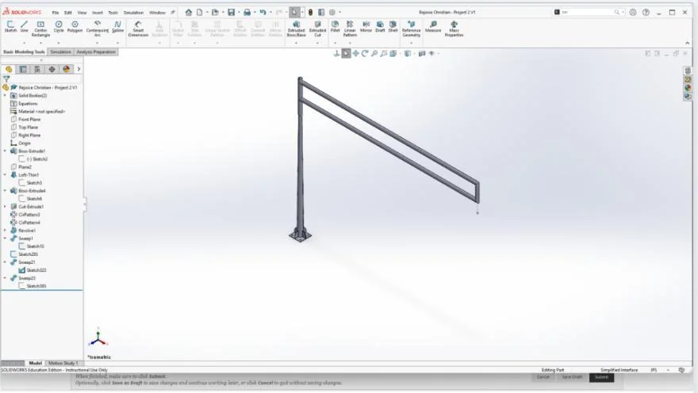
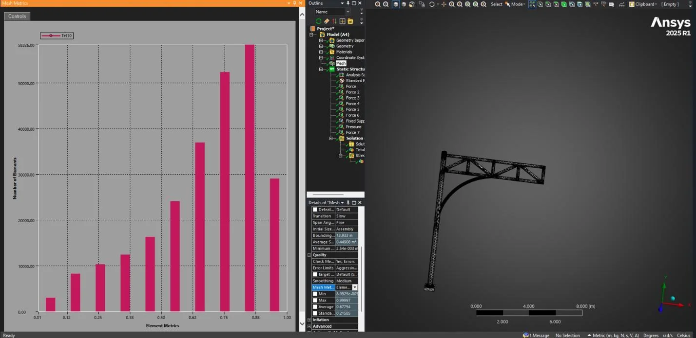

ME 347 Project 2 · Structural design & FEA
Traffic mast-arm design.
Designing a decorative traffic mast arm for a 26 ft roadway, then using finite element analysis to improve its bracing and pole-to-arm connection.
- My work
- CAD design & analysis
- Tools
- SolidWorks · ANSYS
- Project
- Project 2 · Spring 2026
- Reported minimum safety factor
- ≈ 3.16
- Reported maximum deformation
- 0.116 m
- Design wind speed
- 95.7 mph
The design brief
The assignment was to design, analyze, and improve a decorative traffic pole and mast arm inspired by Chicago. The structure needed a single cantilever pole, a 26 ft roadway span, and support for the specified fixtures and wind load.
I researched five mast-arm styles, including straight, curved, cable-supported, trussed, and box-frame arrangements. I compared their appearance, support strategies, and load paths before developing my own concept.
Starting with the geometry
My first direction used a vertical pole and a simple rectangular frame extending over the roadway. I modeled the structure in SolidWorks, aiming for a form that was straightforward to build and could accept reinforcement as the analysis developed.

Loads and analysis setup
I imported the model into ANSYS and represented the pole connection as a fixed base. The assignment described a cantilever pole attached to a reinforced pedestal with anchor bolts.
| Item | Input used in the course study |
|---|---|
| Luminaires | Three at 60 lb each; two on the arm and one on the pole |
| Signs | Three at 5 lb each |
| Gravity | Included with the applied fixture loads |
| Wind speed | 87 mph reference gust × 1.10 = 95.7 mph |
| Wind pressure | Approximately 1,121 Pa, applied to the front-facing surfaces |
| Base support | Fixed support at the pole base |
I used the dynamic-pressure relationship, q = ½ρV², with standard air density to estimate the wind pressure. Correct load locations and directions were an important part of setting up the model.
I also reviewed the mesh-quality distribution, with particular attention to the curved and connected regions. The report describes the mesh as a balance between element quality and computation time.
How the design changed
Rectangular frame
The early concept provided a simple layout but needed more reinforcement under the modeled loads.
Diagonal bracing
I added triangulated members to create a truss and improve the path through which loads were carried across the arm.
Curved lower support
Earlier results identified the pole-to-arm junction as a weak region. A curved member reinforced that transition while contributing to the decorative form.

Reported results
The final design reached a reported minimum safety factor of approximately 3.16, above the course requirement of 2. The reported maximum total deformation was 0.116 m, or 116 mm, near the end of the mast arm.
These figures describe the course simulation and its modeled load case. The work demonstrates how changes in geometry and reinforcement affected the analysis; it does not establish construction readiness.
Material and cost comparison
The report compared steel and aluminum using the same recorded volume. The table retains the reported values and converts the cost column from thousands of dollars to dollars.
| Measure | Steel | Aluminum |
|---|---|---|
| Volume (in³) | 111,378.91 | 111,378.91 |
| Estimated cost (USD) | $17,336 | $17,375 |
| Mass (metric tonnes) | 14.297 | 4.926 |
| Safety factor | 3.158 | 4.27 |
| Aesthetic score / 10 | 8 | 7 |
| Durability score / 10 | 6 | 8 |
| Design metric score S | 0.612 | 2.794 |
The aesthetic, durability, and composite scores were project comparison measures. Refining the cost and mass estimates was one of the improvements I identified for further work.
What I learned and would improve
The most useful lesson was seeing how a visually appealing design could still need substantial reinforcement. FEA helped me identify the weak connection region and make specific changes to the bracing and support geometry.
Next steps would include refining the dimensions, checking additional truss layouts, and improving the material and cost comparison while looking for opportunities to reduce weight.
Project evidence and reported values: my ME 347 Project 2 final report, April 30, 2026.